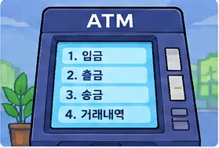

10회차 — 최종 프로젝트
학습 목표: 지금까지 배운 문법을 활용해 키오스크에 기능을 추가하고, 오류를 찾아 수정하며 시연한다.
🎯 요구사항 분석과 문제 분해 Problem Framing
코드를 입력하기 전에 먼저 무엇을 만들어야 하는지 정리하고, 해결 과정을 작은 단계로 나눠 봅시다.
🔎 1. 요구사항 분석하기
오늘 해결할 문제
RPG·키오스크·ATM·미니게임 중 하나를 골라 새 기능을 넣고 실행·테스트하기
- 입력
- 주제, 사용자 입력, 필요한 데이터
- 출력
- 작동하는 프로그램과 시연
🧩 2. 문제를 작은 단계로 나누기
- 1꼭 필요한 기능 3개 정하기
- 2기능을 메서드·객체로 나누기
- 3하나씩 구현·실행하기
- 4테스트 후 발표하기
생각해 보기
가장 먼저 완성해야 할 최소 기능은 무엇일까?
코드는 아직 쓰지 말고, 입력 → 판단·처리 → 출력 흐름을 말이나 그림으로 설명해 봅시다.
간단한 로직 메모하기
- 1 꼭 필요한 기능 3개 정하기
- 2 기능을 메서드·객체로 나누기
- 3 하나씩 구현·실행하기
- 4 테스트 후 발표하기
이렇게 생각해요!
작게 완성한 뒤 테스트하고, 오류가 있으면 수정해요.
오늘의 목표 — 직접 만든 프로그램 발표하기
지금까지 배운 변수·조건문·반복문·배열·메서드·클래스·객체를 활용해 개인 또는 모둠 프로젝트를 완성하고 발표합니다. 예제를 그대로 실행하는 대신 새로운 기능을 하나 이상 직접 설계해 보세요.
- 아이스티 2잔 중 1잔만 취소해야 한다면 기존 주문 데이터를 어떻게 수정할까요?
- 음료를 하나 더 추가하려면 이름과 가격을 어디에 등록해야 할까요?
- 주문 금액이 0원일 때 결제를 진행해도 될까요?
수업 진행 (180분)
| 활동 | 시간 | 내용 |
|---|---|---|
| 주제 선택·설계 | 20분 | 만들 기능과 입력·출력 정하기 |
| 기본 기능 구현 | 45분 | 배운 문법으로 동작하는 프로그램 만들기 |
| 휴식 | 10분 | 잠깐 쉬기 |
| 기능 추가·디버깅 | 55분 | 새 기능과 오류 처리 테스트 |
| 시연·발표 | 40분 | 동작 설명 및 질의응답 |
| 마무리 | 10분 | 피드백과 개선점 정리 |
실습 방법: 먼저 질문에 답하고, 해당 회차 폴더의 Java 파일을 열어
TODO를 작성합니다. 정답이 없는 상태의 파일이므로 직접 실행 결과를 확인하세요. 설명을 듣기 전에는 완성 코드를 찾아보지 않습니다.
프로젝트 선택 — 네 가지 예시 또는 자유 주제
기존 수업에서 만든 프로그램 중 하나를 골라도 좋고, 새로운 프로그램을 설계해도 좋습니다. 중요한 것은 지금까지 배운 문법을 활용해 실제로 실행되는 기능을 만드는 것입니다.
1. RPG 전투 게임
몬스터와 전투하기, 공격·회복·도망, 아이템 또는 레벨업 추가
조건문 · 반복문 · 메서드 · 클래스
2. 나만의 키오스크
음료 메뉴 바꾸기, 장바구니, 할인, 카드·현금 결제
ArrayList · 클래스 · 조건문

3. 은행 ATM
계좌의 입출금·잔액 확인에 송금이나 거래 기록 추가
클래스 · 객체 · 메서드
4. 미니게임·심리테스트
가위바위보·숫자 업다운·MBTI 중 하나를 확장하거나 새 퀴즈 만들기
입력 · 문자열 · 조건문 · 반복문
프로젝트 완성 조건
- 사용자가 값을 입력할 수 있어야 합니다.
- 조건문과 반복문을 각각 한 번 이상 사용합니다.
- 직접 만든 메서드를 두 개 이상 사용합니다.
- 기존 예제에는 없던 기능을 한 가지 이상 추가합니다.
- 동작 화면을 시연하고, 주요 코드의 역할을 설명합니다.
개발 전에 적어 보기
만들 프로그램의 이름, 입력값, 출력 결과, 필요한 변수·메서드, 가장 먼저 시험해 볼 상황을 5줄로 적은 후 코드를 시작합니다. 기능을 한 번에 만들지 말고 작은 단위로 실행해 보세요.
발표 준비와 테스트
- 정상 입력으로 실행한 결과를 보여주세요.
- 잘못된 입력 한 가지를 시험하고 처리 방법을 설명하세요.
- 직접 추가한 기능과 어려웠던 점을 소개하세요.
- AI를 사용했다면 어느 부분에 도움을 받았고 무엇을 직접 검증했는지 말해 보세요.
추가 선택 실습 — 기존 키오스크 기능 개선
새 프로젝트를 정하기 어려운 학생은 아래 Kiosk.java 과제 중 한두 개를 선택해 수행할 수 있습니다. 프로젝트 필수 조건을 만족하도록 스스로 응용하세요.
제공 코드의 구조 먼저 이해하기
파일: Kiosk.java · 10_최종_프로젝트/Kiosk.java
제공된 코드는 기본 주문·취소·결제가 이미 동작하는 시작본입니다. 이번에는 기존 기능을 읽고 필요한 부분을 직접 수정합니다. 먼저 order(), cancel(), pay()가 맡은 역할을 찾으세요.
import java.util.ArrayList;
import java.util.Scanner;
import java.io.IOException;
import java.nio.file.Files;
import java.nio.file.Path;
public class Kiosk {
static class Order {
String name;
int price;
int qty;
Order(String name, int price, int qty) {
this.name = name;
this.price = price;
this.qty = qty;
}
}
static final String[] NAMES = {"아이스티", "초코라테", "레몬에이드"};
static final int[] PRICES = {3000, 3500, 3500};
static final Scanner SC = new Scanner(System.in);
static final ArrayList<Order> CART = new ArrayList<>();
static int sum(ArrayList<Order> cart) {
int total = 0;
for (Order order : cart) {
total += order.price * order.qty;
}
return total;
}
static int readInt(String prompt) {
while (true) {
System.out.print(prompt);
try {
return Integer.parseInt(SC.nextLine());
} catch (NumberFormatException e) {
System.out.println("숫자로 입력하세요.");
}
}
}
static void order() {
for (int i = 0; i < NAMES.length; i++) {
System.out.println((i + 1) + ". " + NAMES[i]
+ " " + PRICES[i] + "원");
}
int num = readInt("메뉴 번호: ");
if (num < 1 || num > NAMES.length) {
System.out.println("없는 메뉴입니다.");
return;
}
int qty = readInt("수량: ");
if (qty <= 0) {
System.out.println("수량은 1 이상이어야 합니다.");
return;
}
CART.add(new Order(NAMES[num - 1], PRICES[num - 1], qty));
System.out.println("장바구니에 담았습니다.");
}
static int printCart() {
int total = sum(CART);
if (CART.isEmpty()) {
System.out.println("장바구니가 비었습니다.");
}
for (int i = 0; i < CART.size(); i++) {
Order o = CART.get(i);
System.out.println((i + 1) + ". " + o.name + " "
+ o.qty + "개 " + (o.price * o.qty) + "원");
}
System.out.println("합계: " + total + "원");
return total;
}
static void cancel() {
if (CART.isEmpty()) {
System.out.println("취소할 주문이 없습니다.");
return;
}
printCart();
int num = readInt("삭제할 번호: ");
if (num >= 1 && num <= CART.size()) {
CART.remove(num - 1);
System.out.println("삭제 완료");
} else {
System.out.println("없는 주문 번호입니다.");
}
}
static void pay() {
if (CART.isEmpty()) {
System.out.println("주문이 없습니다.");
return;
}
int total = printCart();
int student = readInt("학생 할인? 1. 예 2. 아니요: ");
if (student != 1 && student != 2) {
System.out.println("할인 선택을 다시 해주세요.");
return;
}
int discount = student == 1 ? total / 10 : 0;
int due = total - discount;
int cash = readInt("받은 금액: ");
if (cash < due) {
System.out.println("금액이 부족합니다: " + (due - cash) + "원");
return;
}
StringBuilder receipt = new StringBuilder();
receipt.append("=== 영수증 ===\n");
for (Order o : CART) {
receipt.append(o.name).append(" ").append(o.qty)
.append("개 ").append((o.price * o.qty)).append("원\n");
}
receipt.append("합계 ").append(total).append("원\n");
receipt.append("할인 ").append(discount).append("원\n");
receipt.append("결제 ").append(due).append("원\n");
receipt.append("거스름돈 ").append(cash - due).append("원\n");
System.out.println(receipt);
try {
Files.writeString(Path.of("receipt.txt"), receipt);
System.out.println("영수증을 receipt.txt에 저장했습니다.");
} catch (IOException e) {
System.out.println("영수증 저장 실패: " + e.getMessage());
}
CART.clear(); // 결제가 끝나면 주문 목록을 비운다.
}
public static void main(String[] args) {
while (true) {
System.out.println("\n=== 키오스크 ===");
System.out.println("1. 주문 2. 장바구니 3. 삭제 4. 결제 0. 종료");
int menu = readInt("선택: ");
if (menu == 0) {
break;
}
if (menu == 1) {
order();
}
else if (menu == 2) {
printCart();
}
else if (menu == 3) {
cancel();
}
else if (menu == 4) {
pay();
}
else {
System.out.println("잘못된 선택입니다.");
}
}
SC.close();
}
}이 파일은 전체 기본 기능을 포함한 프로젝트 시작본입니다. 코드를 처음부터 다시 입력하지 않고, 필요한 위치를 찾아 기능을 추가합니다.
| 코드 요소 | 역할 |
|---|---|
Order |
한 주문의 음료 이름·가격·수량 보관 |
NAMES, PRICES |
메뉴 데이터 |
CART |
주문 목록 보관 |
readInt() |
입력값을 정수로 안전하게 읽기 |
order() |
새 주문 추가 |
printCart() |
장바구니 출력·합계 계산 |
cancel() |
주문 항목 삭제 |
pay() |
결제 진행 |
코드 읽기 과제: ① 메뉴 선택 부분 ② 주문 목록을 수정하는 부분 ③ 결제 금액을 계산하는 부분을 직접 찾아 표시하세요. 먼저 찾아본 뒤 강사와 비교합니다.
제공 코드 읽는 순서
Kiosk.java를 바로 수정하지 말고, ① 메뉴 출력 부분 ② 주문을 저장하는 목록 ③ 취소할 항목을 찾는 부분 ④ 합계를 계산하는 부분을 순서대로 찾아 표시합니다. 각 기능은 따로 동작을 확인한 다음 합칩니다.
// 새로운 기능을 만들기 전 점검할 세 가지
// 1. 어떤 변수의 값이 바뀌는가?
// 2. 어느 조건일 때 실행하는가?
// 3. 바뀐 결과를 무엇으로 확인할까?키오스크를 프로젝트로 선택했다면 음료 추가·주문 취소 중 한 가지를 완성하고, 자신만의 기능을 하나 더 추가합니다. 다른 주제를 선택한 학생은 위의 공통 완성 조건을 따릅니다.
과제 1. 새로운 음료 추가하기
현재 메뉴에 복숭아 아이스티 3,500원을 추가하세요. 이름만 추가하면 충분할까요? 가격 배열과 메뉴 번호 선택 범위까지 확인하세요.
테스트: 새 음료 2잔 주문 후 표시되는 합계가 예상과 일치해야 합니다.
힌트: Kiosk.java의 NAMES와 PRICES를 함께 찾으세요. 배열의 같은 인덱스가 같은 음료를 뜻합니다.
교사용 정답 보기 · 과제 1
// Kiosk.java 위쪽의 메뉴 배열을 같은 순서로 수정
static final String[] NAMES = {
"아이스티", "초코라테", "레몬에이드", "복숭아 아이스티"
};
static final int[] PRICES = {3000, 3500, 3500, 3500};과제 2. 수량을 줄이는 취소 기능
기본 코드는 장바구니 한 항목 전체 삭제 방식입니다. 주문 수량이 2개 이상일 때 1개만 취소하도록 바꾸려면 어떤 값을 변경해야 할까요? 수량이 1일 때는 항목 자체를 삭제해야 합니다.
테스트: 같은 음료를 2잔 주문한 뒤 1잔 취소 → 장바구니에 1잔이 남고 금액도 한 잔 가격만큼 줄어야 합니다.
힌트: cancel() 안에서 기존 CART.remove(num - 1) 대신 수량을 먼저 확인하세요. 주문이 2잔이면 qty만 1 줄이고, 1잔이면 목록에서 삭제합니다.
교사용 정답 보기 · 과제 2
Order selected = CART.get(num - 1);
if (selected.qty > 1) {
selected.qty--;
} else {
CART.remove(num - 1);
}과제 3. 할인 적용하기
총금액이 10,000원 이상인 경우 10% 할인하는 규칙을 추가하세요. pay()에서 기존 결제 금액이 계산되는 위치를 찾고 적용할 조건을 작성합니다.
테스트: 합계가 9,000원일 때와 10,000원일 때 결과를 각각 비교하세요.
힌트: pay()에는 학생 할인 규칙이 이미 있습니다. 이번 미션에서는 기존 규칙을 주문 합계 10,000원 이상 할인으로 교체하세요. 두 규칙을 동시에 적용하는 것이 아닙니다.
교사용 정답 보기 · 과제 3
// pay()에서 결제 금액 계산 위치를 찾으세요.
// 기존 학생 할인 대신 10,000원 이상 할인으로 바꾸는 선택안
int discount = 0;
if (total >= 10000) {
discount = total / 10;
}
int due = total - discount;과제 4. 입력 오류 검증
없는 메뉴 번호, 음수 수량, 글자 입력, 빈 장바구니 결제에 대한 결과를 확인하세요. 프로그램이 종료되지 않고 다시 입력받거나 적절한 안내를 해야 합니다.
힌트: readInt()는 숫자가 아닌 글자를 다시 받는 역할을 이미 합니다. order()와 pay()에서 범위·빈 주문 검사 부분을 찾아 설명하고, 빠진 검사가 있다면 추가하세요.
교사용 정답 보기 · 과제 4
// order()에서 수량이 유효하지 않으면 주문을 저장하지 않음
if (qty <= 0) {
System.out.println("수량은 1 이상이어야 합니다.");
return;
}
// pay()에서 빈 장바구니면 결제를 진행하지 않음
if (CART.isEmpty()) {
System.out.println("주문이 없습니다.");
return;
}실습 2. 회복 기능의 경계값 테스트
파일: Test.java · 10_최종_프로젝트/Test.java
RPG에서 체력 90인 캐릭터가 35 회복한다면 125가 되어도 될까요? 최대 체력이 100일 때 결과가 얼마가 되어야 할지 계산한 뒤 프로그램으로 확인하세요.
처음부터 Math.min()을 사용하지 말고 2회차에서 배운 if로 먼저 해결합니다.
int hp = 90;
hp += 35; // 회복 후 임시 체력 125
if (hp > 100) { // 최대 체력보다 크면
hp = 100; // 100으로 제한
}
System.out.println(hp); // 100이 결과를 확인한 다음 Math.min(a, b)가 두 값 중 작은 값을 반환한다는 사실을 이용해 같은 기능을 한 줄로 바꿔 봅니다.
발표할 때 확인할 내용
완성한 프로그램에서 다음 내용을 2~3분 동안 보여주세요.
- 본인이 추가하거나 수정한 기능 1개
- 기능을 실행한 실제 결과
- 고치기 어려웠던 문제와 해결 방법
최종 기준: 코드를 그대로 외우는 것이 아니라 어떤 데이터를 수정했고 왜 그렇게 동작하는지 설명할 수 있어야 합니다.